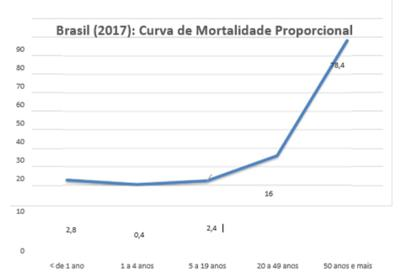
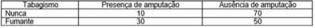

Paciente com 53 anos portador de asma, há vários anos, chega na Emergência do Hospital de Ensino com história há 1 dia de febre, tosse seca, dor de garganta, mialgia, cefaleia e prostração. Foi feito diagnóstico de Síndrome Gripal por Infeção pelo Vírus Influenza. Qual a conduta correta para este caso?
O número de casos internados por Doença Meningocócica (DM) pelo Sorogrupo C e o número de óbitos em crianças e adolescentes por esta doença foi considerado preocupante, nos últimos anos, no município X. A maior letalidade foi observada nas crianças de 6 a 12 meses. O Calendário Nacional de Vacinação passa a indicar a Vacinação contra a Neisseria meningitides pelo Sorogrupo C para crianças e adolescentes. Os resultados esperados com esta estratégia de prevenção primária para a DM do Sorogrupo C são:
Uma adolescente de 16 anos, saudável, estudante de ensino médio, procura atendimento na Unidade Básica de Saúde, sem acompanhante. Refere que já iniciou a vida sexual e gostaria de fazer uso da pílula anticoncepcional, apesar de utilizar preservativo. O médico que atende diz que só pode prescrever o método pedido após falar com um de seus pais ou responsável legal. Qual é a alternativa correta em relação a conduta do médico?
Revisar: possível letra faltando em alt C
Paciente de 33 anos, masculino relata que chegou há 5 dias de Beira em Moçambique onde vem ocorrendo Surto de Cólera. Procurou a Emergência do Hospital de Ensino (HE), pois apresentou um episódio de vômito, náuseas e três episódios de diarreia. No exame físico está em bom estado geral, hidratado e sem alterações. Foram colhidas amostras de fezes para a pesquisa do Vibrio cholerae. Refere que não teve contato com casos de cólera e que não foi vacinado contra a doença. Em relação a este caso pode-se dizer que:
Paciente de 87 anos portador da Síndrome de Parkinson, deu entrada na Emergência do Hospital, com história de vômitos sanguinolentos. Ao exame físico apresentava-se descorado com PA 80x50 mmHg. Foi encaminhado para UTI. O paciente é portador neoplasia maligna das vias biliares, diagnosticado há cinco meses, segundo familiar que o acompanhava. Foram realizados exames de imagem que identi cou metástase para o fígado e que levaram a hemorragia digestiva. O paciente evolui para choque hipovolêmico e parada cárdio respiratória. Foram realizadas manobras de reanimação, porém sem sucesso. O óbito foi constatado e atestado pelo médico chefe do plantão da emergência. Indique a alternativa correta para o preenchimento da declaração de óbito para as causas da morte deste paciente na parte I e Parte II:
Qual é a conduta recomendada em relação a prevenção da transmissão vertical do vírus da hepatite B para um RN prematuro, pesando 1800 Kg, filho de mãe sabidamente AgHbs positiva e que esta mãe faz tratamento para Hepatite B.
Paciente com 12 meses de vida, é levado por sua mãe na Unidade Básica de Saúde da Família do seu bairro, pois está preocupada com os casos de sarampo. Está faltoso nas consultas há 6 meses. Na rotina dos serviços de saúde, a vacinação contra o sarampo deve ser realizada, conforme as indicações do Calendário Nacional de Vacinação vigente. Para esta criança, em relação a vacina contra o sarampo, qual das alternativas abaixo é a correta?
No Brasil, em 2017, ocorreram 1.312.663 óbitos, sendo que 36.223 de menores de um ano, 5.918 de 1 a 4 anos, 29.376 de 5 a 19 anos, 208.708 de 20 a 49 anos e 1.029.471 de 50 anos e mais (Fonte: DATASUS). Baseado no gráfico, assinale a alternativa que interpreta corretamente a curva.

O Brasil possui, hoje, aproximadamente, 55 milhões de usuários da Saúde Suplementar, podendo chegar até 70 milhões de usuários, segundo previsão do setor, se o preço dos convênios diminuírem. Somos o 3º país do mundo em relação ao mercado de Medicina Suplementar. Baseado nas três reportagens abaixo, quais as transformações pelas quais o setor vem passando nos últimos anos no Brasil? 1. ESTADÃO: “Apo informações da Agência Nacional de Saúde Suplementar, o número de operadoras médico-hospitalares com bene ciários caiu de 1.345 para 929, o que significa uma queda de 30% (Foco Saúde Suplementar, 2013)”. 2. O GLOBO: “Maior Grupo Hospitalar Privado do país, Rede D’OR compra Maternidade Perinatal do Rio. A Rede D’OR e a AMIL — maior operadora do país, com 6,2 milhões de usuários, têm sido vorazes compradores de hospitais”. 3. O GLOBO: “AMIL é vendida para a gigante americana UnitedHeal por 9 bilhões de reais”.
Realizou-se Teste Ergométrico em 100 (cem) homens maiores de vinte anos assintomáticos. Considerando (para a resolução deste exercício) que a Sensibilidade do Teste Ergométrico é de 70% e a Especi cidade é de 80%, caso o Teste Ergométrico dê positivo para doença isquêmica coronariana, qual a probabilidade de o indivíduo de fato ter doença isquêmica coronariana, sabendo que a prevalência de doença coronariana em homens acima de 20 anos assintomáticos é de 4,0%.
“A hospitalização em manicômio terá centralidade no Ministério da Saúde no atual governo. A nota técnica do Ministério da Saúde, divulgada na última quarta-feira, reorientou as diretrizes da Política Nacional de Saúde Mental. Entre as alterações, também constam a compra de aparelhos de eletroconvulsoterapia – eletrochoques – para o Sistema Único de Saúde (SUS), internação de crianças em hospitais psiquiátricos e abstinência para o tratamento de pessoas dependentes de álcool e outras drogas” (Ministério da Saúde). O Atlas de Saúde Mental 2017 (Mental Health Atlas 2017) da Organização Mundial da Saúde (OMS) revela que, embora alguns países tenham feito progressos na formulação e no planejamento de políticas de saúde mental, ainda há uma escassez em todo o mundo de pro ssionais de saúde treinados nessa área e falta investimento em instalações de saúde mental baseadas na comunidade. O Atlas fornece informações sobre políticas existentes, planos e leis para a saúde mental e seu alinhamento com os instrumentos estabelecidos pelos direitos humanos; recursos humanos e nanceiros disponíveis; tipos de instalações que prestam cuidados; e os programas para prevenção e promoção da saúde mental. O documento é baseado em dados fornecidos por 177 Estados Membros da Organização, representando 97% da população mundial, e mede até que ponto os países estão fortalecendo a liderança e a governança para a saúde mental. Quais as diretrizes apontadas pela OMS/OPAS para organização de serviços de saúde mental?
A PORTARIA N 204, DE 17 DE FEVEREIRO DE 2016 define a Lista Nacional de Noti cação Compulsória de doenças, agravos e eventos de saúde pública nos serviços de saúde públicos e privados em todo o território nacional. Em seu artigo 4º ela traz a seguinte definição: Art. 4º A noti cação compulsória imediata deve ser realizada pelo pro ssional de saúde ou responsável pelo serviço assistencial que prestar o primeiro atendimento ao paciente, em até 24 (vinte e quatro) horas desse atendimento, pelo meio mais rápido disponível. Quais as doenças, agravos e eventos que devem ser notificados imediatamente?
A Equipe de Gestão da Saúde do município X está preocupada com o aumento de casos de sí lis congênita. Foram realizadas capacitações das Equipes de Saúde das Unidades Básicas de Saúde para seguimento do Protocolo Clínico de Diretrizes Terapêuticas para Atenção Integral às pessoas com Infecções Sexualmente Transmissíveis (PCDT – IST). Dentre as medidas recomendadas para a prevenção e controle das IST identi ca-se ações que são importantes para a prevenção e controle da Sífilis Congênita como: 1) orientação em saúde sexual e reprodutiva; 2) diagnóstico precoce de sí lis com testagem da gestante de rotina durante o pré-natal (na 1a consulta e no 3o trimestre de gestação/28a semana de gestação) e no momento do parto; 3) dispensação de preservativo masculino ou feminino; 4) tratamento oportuno da sífilis na gestação com penicilina benzatina; Qual das alternativas abaixo relaciona os respectivos níveis de prevenção segundo as ações recomendadas?
Revisar: possível letra faltando em enunciado
Realizou-se um estudo entre pessoas que convivem com diabetes. Formou-se dois grupos de 80 pacientes em cada grupo, separados entre aqueles que já tinham sofrido alguma amputação localizada no membro inferior e aqueles que nunca sofreram amputação de membro inferior. Investigou-se história de tabagismo. O resultado encontra-se na tabela abaixo. Baseado no Modelo de Estudo e na Tabela, responda:

“O Canadian Radiographic Breast Screening Study: randomised screening trial ” chegou à conclusão de que o screening por mamogra a não reduz a mortalidade por câncer de mama nas faixas etárias de 40- 49 anos e de 50-69 anos, após um seguimento de 25 anos de suas 89.835 participantes. Em revisão sistemática de oito estudos randomizados, em 2013, incluindo 600.000 mil mulheres entre 39 e 74 anos, Gøetzche conclui que o malefício causado pelo sobrediagnóstico sobrepõe-se ao benefício da detecção precoce: de 2.000 mulheres submetidas ao rastreamento por 10 anos, uma vai evitar a morte por câncer de mama, mas 10 mulheres saudáveis serão tratadas desnecessariamente e 200 mulheres experimentarão estresse psicolo Sobre o rastreamento de câncer de mama, considerando riscos e benefícios envolvidos, assinale a alternativa correta em relação às recomendações atuais do Ministério da Saúde e Instituto Nacional do Câncer:
“A articulação entre os diversos serviços e ações de saúde, de forma que estejam sincronizados e voltados ao alcance de um objetivo comum, independentemente do local onde sejam prestados. Objetiva ofertar ao usuário um conjunto de serviços e informações que respondam a suas necessidades de saúde de forma integrada, por meio de diferentes pontos da rede de atenção à saúde”. Assinale a alternativa que contempla este atributo essencial da Atenção Primária:
Pré-escolar, 3 anos, trazido pela sua mãe ao pediatra com queixa de tosse há 7 dias. Inicialmente esta tosse era seca e agora está produtiva. A mãe refere que nos primeiros 2 dias, seu lho apresentou febre de 38,2ºC. Agora está sem febre, ativo, com apetite e sono razoáveis. Nega uso de medicações além do antitérmico. Ao exame: bom estado geral, corado, hidratado, eupneico. Orofaringe com hiperemia e secreção amarelada em parede posterior. Otoscopia: hiperemia marginal, sem abaulamento ou opaci cação. Bulhas ritimicas sem sopros; MV presente e simétricos; abdome normotenso sem visceromegalias. Diante do caso acima a melhor conduta é:
Adolescente com quadro de febre, moderada, persistente por mais de 15 dias e frequentemente vespertina, acompanhado de irritabilidade, tosse, perda de peso, sudorese noturna, às vezes profusa. Na investigação apresentou, duas baciloscopias diretas positivas no escarro; foi introduzido tratamento com o esquema básico. Assinale a alternativa correta em relação ao tratamento. Segundo o Manual de Recomendações para o Controle da Tuberculose no Brasil Ministério da Saúde
Menino, 8 anos, trazido a Unidade de Pronto Atendimento por apresentar há 5 dias, febre elevada acompanhado de cefaleia e dor articular em membros inferiores e hoje apareceu exantema maculopapular difuso, presente em região palmar e plantar. Refere ter ido pescar com seu pai, em represa onde havia capivaras, e foi picado por algum inseto. Considerando a provável hipótese diagnóstica assinale a alternativa correta.
Lactente, masculino, com 6 meses de idade foi levado por sua mãe em consulta. No exame físico dos genitais você evidência hipospadia distal e criptorquidia bilateral. Qual das alternativas a seguir é a melhor para a próxima etapa no processo?
Uma menina de 6 anos de idade é levada a uma clínica pediátrica com uma queixa de baixa estatura. Ela é fruto de um casamento não consanguíneo, nascida a termo de cesariana eletiva. Seu peso ao nascer foi de 2,1 kg e 43 cm. No período pós-natal, cou internada na unidade porque foi inicialmente alimentada por sonda por di culdades alimentares. Seu desenvolvimento neuropsicomotor foi levemente atrasado. No exame, ela tem fácies triangular, com testa grande e clinodactilia do quinto dedo. Seu peso e altura estão ambos abaixo do terceiro percentil. Observa-se assimetria dos membros inferiores, com hipertrofia do membro inferior esquerdo e discrepância de 2,5 cm no comprimento da perna. Qual é o diagnóstico mais provável neste caso?
Menina, 8 anos, chega à unidade de emergência com queixa de falta de ar e vômitos há dois dias. Mãe refere emagrecimento nos últimos 30 dias, acompanhado de poliúria e polidipsia. Exame físico: regular estado geral, consciente, orientada, mucosas secas, FC= 140 bpm, FR= 39 irpm, PA= 95X60 mmHg, tempo de enchimento capilar= 3 segundos. Abdome: plano, ácido, fígado 1 cm do rcd, indolor, ruídos hidroaéreos presentes, sem sinais de irritação peritoneal. Gasometria arterial: pH= 7,27; bicarbonato= 9 mEq/l, glicemia= 410 mg/dL. Iniciada reposição volêmica com cristaloides e infusão de insulina. Após algumas horas de tratamento criança apresenta redução abrupta da frequência cardíaca, hipertensão arterial, vômitos, alterações do nível de consciência e alterações pupilares. Diante deste quadro qual a melhor conduta?
No Brasil temos áreas endêmicas de febre amarela. Doença que quando evolui de forma grave apresenta alto índice de mortalidade. Temos árduo trabalho para o controle da doença em nosso país. Assinale a alternativa correta em relação às suas caracteristicas
Escolar de 10 anos apresenta quadro de dor abdominal há 30 dias. Sua mãe refere que apresenta episódios de diarreia acompanhando o quadro. Esteve na casa da tia passando férias e nadou na lagoa do sítio. Realizado protoparasitológico que mostrou a presença de cistos de Giardia intestinalis. Qual das alternativas a seguir é mais precisa em relação à giardíase?
Bebê de dois meses foi levado ao pediatra para uma consulta de puericultura. Parece um bebê feliz e está sorrindo para a mãe durante a consulta. Durante o exame físico, você observa que o bebê tem um tônus muscular diminuído. Ele não levanta a cabeça quando está deitado de bruços, e sua cabeça deve estar totalmente apoiada quando está sendo segurado. Além disso, suas pernas são exíveis parecidas com pernas de sapo. Os reflexos patelares estão ausentes. Parece também que ele não está ganhando peso adequadamente. Foi realizada uma ressonância magnética cerebral, que foi considerada normal. Foi obtido um painel metabólico abrangente, o que também foi normal. A creatinina quinase (CK) está levemente elevada (1,5 × normal). Qual é o próximo passo que o pediatra deve dar?
Adolescente, após ter participado de evento esportivo em ambiente aberto e lotado de torcedores, apresentou após algumas horas, rouquidão com piora progressiva. Nega dor, odinofagia ou tosse. Nega eventos semelhantes. Ao exame: bom estado geral, corado, eupneico. Oroscopia normal. Ausculta torácica normal. De acordo com o enunciado assinale o provável diagnóstico e conduta.
Criança de 3 anos, internada há 12 dias, para tratamento de pneumonia complicada com empiema, usando antibióticos, através de acesso central, afebril há 7 dias. Iniciou há 1 dia pico febril acompanhado de dor, inchaço e descoloração do membro inferior direito. Na consideração das hipóteses diagnósticas qual o melhor exame inicial?
Menino de 5 anos, apresenta queixa de constipação intestinal há 2 anos. Mãe refere que mesmo sendo ressecado está sempre com a cueca manchada de fezes fétidas. Gosta muito de leite. Andou com 1 ano e 2 meses e entrou na escola com 3 anos. Ao exame físico, palpa-se uma massa dura de fezes no cólon. No exame retal encontra-se uma grande quantidade de fezes em um reto dilatado. Perante esta situação clínica assinale qual a melhor alternativa.
Recém-nascido de 37 semanas e 6 dias, nascido de parto cesáreo, sem intercorrências, com peso de 3100g e 48 cm, Apgar 9/10. A bolsa amniótica foi rompida na cesárea com saída de líquido amniótico claro. Foi realizado aplicação de BCG e Hepatite B e vitamina K. Após 20 minutos RN apresentou taquipneia, gemencia com retrações intercostais e batimento de asa nasal. Exame físico: MV presente e simétricos, bulhas ritmicas sem sopros, abdome globoso e normotenso. Realizado RX de tórax: com aumento da trama vascular pulmonar. História obstétrica: primeira gestação com ganho de 9 quilos sem intercorrências com exames normais. Diante do quadro, o diagnóstico é:
Adolescente de 12 anos, apresenta dificuldade escolar, difícil conseguir que faça a lição de casa, tem "crises nervosas" e "faz birra". O que ele mais gosta de fazer é jogar vídeo game. Os pais também observaram que ele pode ser muito distraído. Além disso, embora goste de ajudar o pai nos trabalhos com máquinas, ele frequentemente esquece as ferramentas que é solicitado a buscar. O exame do estado mental, revelou ansiedade relativamente alta, o paciente estava orientado no tempo e espaço, tinha pensamentos coerentes e afeto congruente. A memória, de curto e longo prazo, também estava preservada. Nenhuma alucinação, delírio ou comportamento violento foram relatados. Ele não relatou pensamentos de autoagressão, não tem história de trauma na cabeça nem apresenta patologias importantes. Os exames laboratoriais e o exame físico de rotina não mostraram alterações, e revelaram que ele não tem problemas de audição ou visão, começou a falar e a andar cedo. Ele admite que se sente "burro" na escola e que desconta suas frustrações em crianças que considera inteligentes, sabotando o aprendizado. Com base na anamnese e na avaliação do paciente, qual é o diagnóstico mais provável?
Criança de um ano de idade apresenta febre há 6 dias. No raciocínio diagnóstico, você pensa em Doença de Kawasaki. No exame físico desta criança você provavelmente encontraria os sinais abaixo. Assinale a alternativa cujo achado não é tipicamente associado à doença
Mãe de recém-nascido, acompanha seu lho, em sua primeira consulta de puericultura no pediatra. Está preocupada com a amamentação exclusiva ao seio materno porque refere que ela vem apresentando febre há 3 dias. Nega lesões nas mamas. Sua preocupação é transmitir uma provável infecção para seu bebê e pergunta se deve parar de amamentar e iniciar aleitamento arti cial. Das alternativas abaixo qual que não contraindica a interrupção temporária ou definitiva da amamentação?
Homem, 36 anos referindo dor anal contínua, que piora ao sentar há um dia. Nega febre, nega alterações intestinais e nega trauma local. Ao exame físico está em bom estado geral e o exame proctológico constatou enduração dolorosa em margem anal esquerda com calor e hiperemia local. Para esse caso assinale a alternativa correta.
Mulher de 60 anos procura serviço de proctologia referindo hematoquezia há um ano. Ela nega alterações intestinais. Ao exame proctológico foi constatado lesão ulcero-vegetante, xa, medindo três centímetros em parede anterior do canal anal. Realizado biópsias que constatou carcinoma espinocelular. Para esse caso, assinale a alternativa correta.
Mulher de 45 anos refere hematoquezia e nódulo anal doloroso há dois dias. Relata melhora parcial do quadro após o uso de nimesulida há um dia. Refere constipação intestinal crônica e nega febre. Ao exame físico foi constatado mamilo hemorroidário externo com sinais de trombose. Considerando esse caso, assinale a alternativa correta:
Em pacientes vítimas de lesões renais que provocaram áreas de isquemia no parênquima renal, podemos encontrar como complicação tardia:
Um jovem, vítima de ferimento por arma branca em anco direito, encontra se na cena com sinais clínicos sugestivos de choque hemorrágico. Entende se por Ressuscitação Hemostática no Trauma:
Um jovem recebeu uma joelhada em região de anco esquerdo durante uma partida de futebol. Foi solicitado uma tomografia abdominal com contraste durante a avaliação inicial, que evidenciou uma lesão esplênica Grau II. O paciente está hemodinamicamente normal. Qual das a rmações abaixo contraindicaria o tratamento não operatório pela equipe do trauma:
Um jovem procura a emergência, com um ferimento cortante em face anterior do antebraço direito, causado por uma faca, após uma briga de rua. Com relação ao tratamento da ferida, para obter um melhor resultado estético, podemos considerar:
Mulher de 24 anos, gestante, com 19 semanas de idade gestacional. Relata dor em perna esquerda. Ao exame físico apresenta pulsos presentes e simétricos em membros inferiores, varizes de grossos calibres em ambas pernas. Apresenta edema de 3+/4+ apenas em membro inferior esquerdo, com dor a dorsi exão de pé esquerdo. De acordo com o quadro clínico, qual a melhor alternativa:
Paciente de 55 anos foi admitida no setor de emergência com quadro de distensão abdominal e vômitos há 2 dias. Fez Rx de abdome agudo constatando presença de distensão de alças intestinais e níveis hidroaéreos, com ausência de gás no reto e TC de abdome mostrando aerobilia. Qual sua principal hipótese diagnostica:
Senhora de 75 anos, branca, procura UPA com queixa de dor epigástrica há 4 meses. Ela relata que inicialmente melhorava com uso de ranitidina, mas há cerca de 1 mês passou a apresentar vômitos diários. Queixa-se também de perda de peso, halitose e mal estar geral. Diante do exposto acima, assinale a alternativa correta na condução do caso:
Menino de 13 anos procura serviço de emergência com queixa de dor intensa no testículo direito, de início abrupto há doze horas, acompanhado de náuseas e vômitos. Ele nega traumatismo e relata ter feito uso de analgésico sem melhora da dor. Ao exame físico apresenta temperatura de 38ºC, edema e enduração do testículo direito com reflexo cremastérico ausente à direita. Diante do caso acima, todas afirmações estão corretas, exceto:
Uma mulher de 26 anos procurou emergência com dor e abaulamento na virilha do lado esquerdo há um dia. Ao exame físico apresentava abaulamento arredondado, doloroso à palpação, não redutível, sem sinais ogísticos localizado abaixo do ligamento inguinal. Qual o diagnóstico mais provável?
Paciente de 66 anos, procura emergência referindo dor abdominal em cólica há três dias associado a distensão abdominal e vômitos. Ele relata que há um dia passou a apresentar febre, dispneia e fraqueza. De antecedentes pessoais refere ser diabético controlado com hipoglicemiantes orais e hipertenso em uso de valsartana e anlodipina e também cirurgia para apendicite na adolescência. Ao exame físico ele está desidratado, corado, febril (37,8º C). No exame do abdome, o paciente apresenta uma incisão mediana infra umbilical, distensão abdominal com ruídos hidroaéreos diminuídos e dor difusa a palpação abdominal. Uma tomogra a de abdome é solicitada e mostra um padrão de intestino delgado com alças nas e alças grossas com paredes espessadas captando contraste, pneumatose intestinal e líquido livre na cavidade. Qual o diagnóstico e conduta para este caso:
Está incorreto em relação ao dreno de tórax.
Paciente jovem de 32 anos, sexo masculino, foi contratado recentemente na cooperativa de coleta seletiva da sua cidade. Infelizmente ele já apresentou um atestado médico por causa de gripe há 10 dias, com melhora parcial dos sintomas. Hoje enquanto estava trabalhando sentiu tontura e fraqueza, relatando intensa mialgia acompanhada de febre aferida. Foi encaminhado para atendimento no Hospital de Base sendo realizado o seguinte Exame Físico: Regular estado geral, orientado no tempo e espaço, taquicárdico, com taquipneia leve, descorado +/4+, desidratado +/4+, ictérico 2+/4+, acianótico. Pressão Arterial 100 x 60 mmHg, Frequência Cardíaca de 102 bpm, Frequência Respiratória de 22 ipm, Temperatura de 38,2°C. Ausculta Cardíaca e Pulmonar sem alterações. Abdômen sem visceromegalias mas com dor a palpação superficial e profunda do hipocôndrio direito. Edema de membros inferiores +/4+ bilateralmente. Assinale a alternativa correta em relação aos exames laboratoriais a serem coletados e a principal hipótese diagnóstica:
Um paciente de 33 anos é submetido a laparotomia exploradora. Durante a exploração é encontrado um divertículo na borda anti-mesentérica do íleo, há cerca de 60 cm da válvula ileocecal. Sobre a patologia em questão, qual das alternativas abaixo está incorreta:
Homem de 43 anos é encaminhado para a emergência de um hospital referenciado, referindo dois episódios de hematêmese volumosa há 5 horas. Ele refere estar em tratamento para cirrose hepática e varizes de esôfago neste serviço. Na chegada, ele está pálido e ansioso. Sua pressão arterial é de 90 /60 mm Hg e a frequência cardíaca é de 115 btm. Qual o primeiro passo no manejo deste paciente?
Em uma consulta ambulatorial de pós-internação você atende uma paciente de 76 anos, 65 kg, que recebeu alta há sete dias do Hospital após período prolongado para tratamento de uma pneumonia nosocomial. Ela tem como antecedentes: hipertensão arterial, dislipidemia, miocardiopatia isquêmica e hipotireoidismo. Está em uso de atorvastatina 80 mg a noite, acido acetilsalicílico 100 mg após almoço, enalapril 10 mg 12/12 horas, carvedilol 6,25 mg 12/12 horas e levotiroxina sódica 50 mcg em jejum. Traz exames laboratoriais colhidos no dia anterior à consulta: TSH 10,56 mU/L (VR 0,5 – 4,5 um/L) e T4 livre 0,96 ng/dL (VR 0,7 – 1,8 ng/dL). Sua conduta correta neste momento será:
Paciente de 57 anos, sexo feminino é trazida ao pronto atendimento do Hospital de Base por apresentar episódios de rebaixamento de nível de consciência há quatro horas. Tem como antecedentes pessoais: osteoporose com fratura lombar há três e diabetes mellitus tipo 2 em uso de metformina, glibenclamida e insulinas NPH/Regular no esquema basal/bolus. Exame físico: REG, prostrada, confusa e sonolenta, desidratada 4+/4+, frequência respiratória = 8 vpm, frequência cardíaca = 122 bpm, pressão arterial = 110 x 60 mmHg. Demais sem alterações significativas. Exames laboratoriais séricos: Glicemia = 100 mg/dL - sódio = 156 mEq/L - potássio = 5,3 mEq/L - cloreto = 90 mEq/L - creatinina = 2,3 mg/dL - ureia = 102 mg/dL - cálcio total = 13,5 mg/dL – albumina 4,5 mg/dL - hemoglobina 10,1 g/dL - hematócrito 29% - leucócitos 7.800/mm (0/58/2/3/27/10) - plaquetas 289.000/mm . Gasometria arterial: pH 7,19 – pO2 65 (ar ambiente) – pCO2 35 – HCO3 10. O distúrbio gasométrico completo desse paciente é:
Um paciente, sexo masculino, 36 anos idade, comerciante, casado, está em acompanhamento de um quadro de Hepatite B aguda. 11 meses após o início da doença, apresenta transaminases normais, HBsAg positivo, anti- HBs negativo, HB e Ag positivo, Anti- HBc positivo, Anti- HBc (IgM) negativo e Anti- HBe negativo. O diagnóstico é de:
Paciente de 35 anos idade, portador da patologia CID: B24 há 4 anos, sem tratamento específico, refere há aproximadamente 40 dias diarreia com 3 a 4 evacuações por dia, com fezes aquosas, sem febre ou cólica abdominal. Fez uso de vários medicamentos para verminose sem sucesso. CD4: 210/mm3 e CARGA VIRAL: 156.000 cópias. Dos patógenos listados abaixo, o que mais comumente causa a situação descrita é:
Paciente do sexo feminino, 30 anos, privada de liberdade há 4 meses, foi admitida em Unidade Hospitalar com quadro de emagrecimento de 9Kg em 2 meses, seguido de dor abdominal, acolia fecal e colúria há três semanas e, recente apresentação de dispnéia. Ao exame físico apresentava-se em regular estado geral, dispneica, ictérica +/4+, acianótica, febril e hipocorada; PA: 90 X 60 mmHg; FC: 120 bpm; FR: 26 ipm; T°C: 38,8°C. O exame do pescoço revelou adenomegalia de +/-1,5 a 2,0 cm em cadeia cervical anterior à direita, de consistência borrachóide, não aderidos e dolorosos. Pulmões apresentavam roncos esparsos, crepitações inspiratórias nas difusas; o precórdio apresentava ritmo cardíaco regular em dois tempos, taquicardia e ausência de sopros ou desdobramentos. O abdome estava escavado, tenso, doloroso à palpação de hipocôndrio direito e o fígado palpável a 4 cm do rebordo costal direito; o espaço de Traube estava ocupado e os ruídos hidro-aéreos presentes. As extremidades inferiores apresentavam edema de +/4+. A hipótese diagnóstica de tuberculose foi considerada e o médico assistente optou por:
(ADAPTADA) Mulher de 65 anos, diabética, é avaliada no Centro de Dor Torácica do HB com queixa de dor precordial em queimação, há 1 hora, de moderada intensidade, irradiada para o membro superior esquerdo e desencadeada ao repouso. Ao exame físico apresenta PA: 85 x 55 mmHg, FC: 105 BPM. O ECG mostrou supradesnível do segmento ST de 1,5 mm nas derivações V2-V3 e 1 mm em V4. Quanto ao tratamento e de acordo com a diretrizes da Sociedade Brasileira de Cardiologia, assinale a resposta incorreta.
Em relação à paciente relatada na questão anterior responda. Quanto ao tratamento e de acordo com as diretrizes da Sociedade Brasileira de Cardiologia, assinale a resposta incorreta. Enunciado da questão anterior: Mulher de 65 anos, diabética, é avaliada no Centro de Dor Torácica do HB com queixa de dor precordial em queimação, há 1 hora, de moderada intensidade, irradiada para o membro superior esquerdo e desencadeada ao repouso. Ao exame físico apresenta PA: 85 x 55 mmHg, FC: 105 BPM. O ECG mostrou supradesnível do segmento ST de 1,5 mm nas derivações V2-V3 e 1 mm em V4.
Mulher de 65 anos, diabética, é avaliada no Centro de Dor Torácica do HB com queixa de dor precordial em queimação, há 1 hora, de moderada intensidade, irradiada para o membro superior esquerdo e desencadeada ao repouso. Ao exame físico apresenta PA: 85 x 55 mmHg, FC: 105 BPM. O ECG mostrou supradesnível do segmento ST de 1,5 mm nas derivações V2-V3 e 1 mm em V4. De acordo com a Quarta Definição Universal de IAM, assinale a resposta incorreta.
Uma mulher de 76 anos com antecedentes de diabetes e hipertensão arterial foi trazida a emergência do Hospital de Base apresentando quadro súbito de hemiparesia desproporcionada a direita e di culdade para falar. Um exame mais detalhado mostrou que ela era capaz de obedecer comando simples, mas era incapaz de nomear ou repetir o nome de objetos que lhe foram mostrados. Com base nesses dados podemos afirmar que a paciente apresentava:
Um homem de 52 anos com antecedentes de alcoolismo procurou atendimento referindo di culdade para andar e quedas frequentes. Seu exame físico mostrava uma marcha talonante, arre exia patelar e aquiliana, além da presença de sinal de Romberg. Do ponto de vista topográfico podemos afirmar que houve comprometimento:
Paciente de 65 anos de idade, admitida em unidade de emergência do Hospital de Base por quadro de dispneia há 2 dias associada a tosse produtiva com expectoração com aspecto purulento. Raio-X de tórax evidenciou imagem de hipodensidade em lobo médio e inferior direito. Foi-lhe prescrito ceftriaxone e claritromicina. Paciente evoluiu com piora do padrão respiratório e hipotensão (pressão arterial média de 50mmHg). Foi indicada intubação orotraqueal (IOT) em Sequência Rápida uma vez que não haviam preditores de via aérea difícil. Levando-se em consideração o per l de ação hemodinâmica das drogas abaixo, assinale a melhor opção a ser utilizada como droga sedativa para proceder à IOT:
Paciente de 45 anos, gênero feminino, admitida em enfermaria de clínica médica do Hospital de Base para investigar significativa perda ponderal nos últimos 6 meses. Reporta repetidas internações em outros serviços, neste período, por episódios de dor abdominal associado a náuseas e vômitos. Segundo a mesma, sempre lhe era relatado que se encontrava desidratada e recebia alta após reposição volêmica com solução siológica a 0,9%. Há 30 dias, em uma destas internações, foram colhidos exames com o achado de TSH=9,0 mU/L (VR: 0,3 a 4,0). Foi-lhe prescrito levotiroxina 50mcg/dia e desde então episódios de dor abdominal tornaram-se mais frequentes associado à intensi cação da perda ponderal e astenia. Ao exame físico em sua admissão no Hospital de Base apresentava-se em regular estado geral, desidratada 3+/4+, FC=105bpm, FR=22ipm, PA=100x50mmHg, afebril, peso=50kg, altura=170cm. Ausculta pulmonar e precordial sem alterações. Exames admissionais: Ht=45%, leucometria=9.500 (eosinó los=10%) plaquetas=350mil, sódio=130mEq/L, potássio=4,8mEq/l, creatinina=0,8mg/dl, glicemia=92mg/dL e urina I sem alterações. Diante deste quadro clínico, assinale e alternativa que mostra o exame que provavelmente confirmaria o diagnóstico da paciente:
Paciente de 65 anos, diabético e hipertenso, realiza consulta admissional no ambulatório de clínica médica para seguimento de suas morbidades. Faz uso regular de metformina 1,5g ao dia, enalapril 10mg ao dia e sinvastatina 40mg ao dia. Nega episódios de dor torácica, eventos cardiovasculares ou cerebrovasculares. Reporta pais falecidos por infarto agudo do miocárdio após os 70 anos de idade. Assinale, dentre as alternativas abaixo, a mais adequada opção para triagem de doença aterosclerótica sub-clínica:
Paciente de 69 anos, viúvo, procedente de Poloni (SP), eletricista. Diabético e hipertenso há 10 anos. Interna eletivamente para realização de artroplastia de quadril a direita. Realiza a cirurgia sem intercorrências. Os exames pós-operatórios são os seguintes: Hemoglobina: 9,8g/dL; hematócrito: 29%; Leucócitos: 10.000; Plaquetas: 176.000; Creatinina: 1,1mg/dL; K: 4,5mEq/L. O melhor plano terapêutico para esse paciente está descrito na alternativa:
Paciente de 65 anos, internado na enfermaria de clínica médica do Hospital de Base para investigação de astenia e perda ponderal de 10% do peso corporal nos últimos 3 meses. Queixava-se recorrentemente de dores lombares e em membros inferiores. Segundo esposa que o acompanhava, paciente apresentou internação em outro serviço há 3 semanas por desorientação no tempo e espaço e desidratação. Ao exame físico estava descorado 2+/4+, desidratado 1+/4+, afebril, FC=90bpm, FR=26ipm. Ausculta pulmonar e precordial sem anormalidades. Palpação abdominal sem visceromegalias e indolor. Exames complementares evidenciavam: Hb=10,5g/dl, Ht=31%, (normocítica e normocrômica), leucometria=4.500/mm , palquetas=180mil, sódio=133mEq/l, potássio=4,1mEq/l, cloro=105 mEq/l (VR:95 a 105), cálcio total=10,5mg/dl (VR: 8,5 a 10,2) glicemia=91mg/dl, creatinina=2,8mg/dl, TGP=25UI/l (VR até 48), albumina=4,0g/dl; gasometria arterial: pH=7,30 pO2=88mmHg pCO2=14mmHg HCO3=4mEq/l satO2=92%. Com relação a este caso clínico assinale a alternativa correta:
Paciente de 32 anos, refere ciclos menstruais regulares, parou de usar método contraceptivo há dois (2) anos e não consegue gestação. O atual esposo tem 45 anos e já teve um filho em relacionamento anterior. Está correto afirmar:
Paciente de 20 anos de idade procura ambulatório de planejamento familiar para orientação contraceptiva com LARCs (contracepção de longa duração reversível). Diante do exposto, qual a orientação correta quanto ao efeito contraceptivo?
Paciente 30 anos de idade, usuária de DIU (Dispositivo Intra-uterino) de cobre, procura ambulatório de planejamento familiar com sinais clínicos sugestivos de infecção por clamídia, assintomática. A conduta correta a ser tomada é:
Paciente de 35 anos, refere história pessoal de tromboembolismo venoso e necessita de método contraceptivo. Qual a melhor recomendação para esta paciente?
Paciente de 29 anos de idade refere atraso menstrual de 10 dias. Já fez exame de pélvico e endovaginal mostrou um cisto de paredes espessas no ovário esquerdo, medindo 2,0 cm. Qual sua hipótese diagnóstica?
Paciente de 45 anos, com aumento do uxo menstrual há 6 meses, associado à dismenorréia. Que hipóteses diagnósticas você faria e qual o principal exame complementar a ser solicitado?
Paciente de 62 anos de idade, menopausada há 10 anos, sem uso de Terapia Hormonal. Começou a apresentar sangramento genital intermitente, de moderada a grande quantidade. Ao exame especular, seu colo uterino não apresentava lesão e foi visto que este sangramento era proveniente do útero. É obesa, diabética e hipertensa. Foi submetida a ultrassonogra a pélvica, que mostrou espessamento endometrial (linha endometrial de 2,1cm). Sendo sua hipótese um Sangramento Uterino Anormal (SUA), qual das alternativas abaixo é uma hipótese diagnóstica para essa paciente?
Paciente de 23 anos de idade, G=0 P=0 A=0, encontra-se em amenorreia há 8 meses, apresentando fogachos, insônia, irritabilidade e fadiga. De antecedentes pessoais, refere ter tido parotidite na infância e Tireoidite de Hashimoto, diagnosticada aos 18 anos, em tratamento e controlada. Seu per l hormonal demonstrou: Prolactina, TSH, T4 livre normais e FSH elevado. Neste caso, qual a principal hipótese diagnóstica?
Quartigesta, com 3 partos anteriores por via vaginal, é admitida em hospital conveniado ao Sistema Único de Saúde (SUS) e escolheu como método contraceptivo a inserção de dispositivo intrauterino no pós-parto imediato. A orientação correta para essa puérpera é:
Gestante na 32ª semana de gestação, hipertensa crônica, dá entrada no serviço de emergência obstétrica com quadro de crise hipertensiva. A conduta imediata para esta paciente é:
No primeiro retorno de consulta pré-natal, sua paciente, primigesta com 12 semanas de gestação, sem intercorrências até o momento, traz os resultados dos exames. Um deles mostra que ela é Rh negativo. Foi solicitado também teste de Coombs Indireto, cujo resultado foi negativo. A conduta adequada para esta paciente é:
Durante o atendimento de gestante na 26ª semana com queixa de dor no baixo ventre, foi realizado o teste da bronectina fetal. O resultado foi positivo e é considerado um fator preditivo para a ocorrência de:
Paciente com atraso menstrual de 8 semanas com queixa de sangramento via vaginal em pequena quantidade e dor pélvica há 2 horas. Foi solicitado no serviço de emergência a dosagem de mUI/ml. Nessa mesma paciente, foi realizado ultrassom endovaginal que mostrou cavidade uterina vazia. Este quadro é sugestivo de:
O Manejo Ativo do Terceiro Período do Trabalho de Parto (MATP) é uma estratégia para a prevenção da hemorragia pós- parto, sendo a atonia uterina sua principal causa. O principal componente desta estratégia é:
Multípara, 38 anos de idade, hipertensa crônica e tabagista. A gestação, de alto risco, evolui com restrição de crescimento intrauterino. Atualmente, encontra-se na 34ª semana de gestação e é solicitada a realização de per l biofísico fetal. Este exame é composto por 4 marcadores agudos e 1 crônico. O marcador crônico de sofrimento fetal por este método é representado por:
Ao analisar o partograma de uma nulípara, 38 semanas de gestação, você observa que a mesma internou com 7 centímetros de dilatação cervical, apresentação cefálica, bolsa das águas rota e boa vitalidade fetal. Após 4 horas do exame acima descrito, observa-se que a dilatação cervical permanece a mesma, apesar da existência de contrações uterinas em número e intensidade adequados. A causa dessa distócia, na maioria das vezes, é devido a: Respostas: 1 12 23 34 45 56 67 78